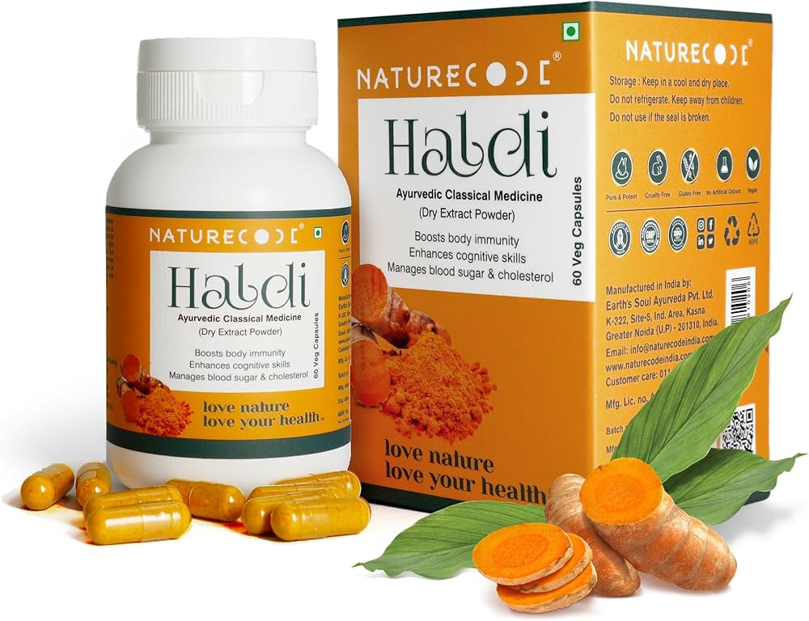
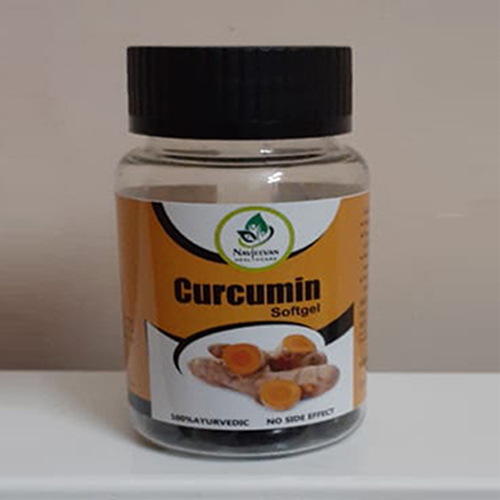

Read more about various ailments, it's causes, symptoms, ayurvedic treatments, etc.
Termeric Medicinal Uses & Benefits
Turmeric is the spice that gives curry its yellow color.
It has been used in India for thousands of years as both a spice and medicinal herb.
ResearchTrusted Source has shown that turmeric
contains compounds with medicinal properties
1. Turmeric contains bioactive compounds with medicinal properties
It has powerful anti-inflammatory effectsTrusted Source and is a very strong antioxidant.
That said, the curcumin content of turmeric is only around 1-6% by weight
Curcumin is also fat soluble, which means it breaks down and dissolves in fat or oil.
That’s why it may be a good idea to take
curcumin supplements with a meal that’s high in fat.
2. Curcumin is a natural anti-inflammatory compound
Curcumin is a bioactive substance that can help fight inflammation,
though very high dosesTrusted Source are required to produce medicinal results.
Still, it means it has the potential to fight the inflammationTrusted Source
that plays a role in many health conditions and diseases.
That’s why anything that can help fight chronic inflammation is potentially
important in preventing and helping treat these conditions.
3. Turmeric can increase the antioxidant capacity of the body
Oxidative damage is believed to be one of the mechanisms behind aging and many diseases.
It involves free radicals, highly reactive molecules with unpaired electrons.
Free radicals tend to react with important organic substances,
such as fatty acids, proteins, or DNA.
Curcumin is a potent antioxidant that can neutralize
free radicalsTrusted Source due to its chemical structure.
4. Curcumin can boost brain-derived neurotrophic factor
Even in adulthood, brain neurons are capable of forming new connections,
and in certain areas of the brain, they can multiply and increase in number.
One of the main drivers of this process is brain-derived neurotrophic factor
(BDNF), which plays a role in memory and learning, and it can be found in areas of
the brain responsible for eating, drinking, and body weight.
5. Curcumin may lower your risk of heart disease
Heart disease is the number oneTrusted Source cause of death in the world.
ResearchTrusted Source suggests that curcumin may help
protect against many steps in the heart disease process.
Specifically, it helps improve the function of the endotheliumTrusted
Source or the lining of your blood vessels.
6. Turmeric may help prevent cancer
Many different forms of cancer appear to be
affected by curcumin supplementsTrusted Source.
In fact, curcumin has been studied as a beneficial herb
in cancer treatmentTrusted Source and has been found to affect cancer growth and development.
Studies have shown that it can:
contribute to the death of cancerous cells
reduce angiogenesis (growth of new blood vessels in tumors)
reduce metastasis (spread of cancer)
There is also evidenceTrusted Source that curcumin may prevent
cancer from occurring in the first place, especially cancers of the digestive system like colorectal cancer.
7. Curcumin may be useful in treating Alzheimer’s disease
Alzheimer’s disease is the most common form of dementia and may contribute to up to 70% of dementia casesTrusted Source.
It’s known that inflammation and oxidative damage play a role in Alzheimer’s
disease, and curcumin has been found to have beneficial effectsTrusted Source on both.
8. Arthritis patients respond well to curcumin supplements
In a studyTrusted Source on people with osteoarthritis,
curcumin appeared to be more effective in relieving pain than a placebo,
and researchTrusted Source has also found its effect to be
similar to that of non-steroidal anti-inflammatory drugs (NSAIDs).
In another study on rheumatoid arthritis, curcumin appeared
to have helped reduce disease-related inflammation.
That said, more study is needed to understand if curcumin can
actually replace such drugs as a treatment for arthritis inflammation pain.
9. Curcumin has benefits against depression
Curcumin has shown some promise in treating mood disorders.
Its positive effects on the brain include boosting the brain neurotransmitters
serotonin and dopamine, reducing inflammation, and encouraging brain plasticity.
This suggests the herb may beTrusted Source an effective antidepressant.
Depression is also linked to reduced levels of BDNF and a
shrinking hippocampus, a brain area with a role in learning and memory.
Curcumin can help boost BDNF levelsTrusted Source, potentially reversing some of these changes.
10. Curcumin may help delay aging and fight age-related chronic diseases
If curcumin can really help prevent heart disease, cancer,
and Alzheimer’s, it may have benefits for longevity as well.
This suggests that curcumin may have potential as an anti-aging supplement.
Given that oxidation and inflammation are believed to play a roleTrusted Source in aging,
curcumin may have effects that go way beyond just preventing disease.
TABLETS


